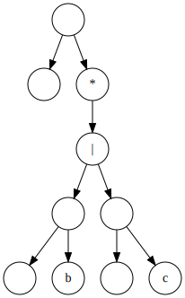

Understanding
Regular Expressions
by Studying 3 Implementations
Doug Hellmann
What are
“Regular Expressions”?
Formal Language for
Matching Patterns in Text
Their Uses
- Finding
- Parsing
- Editing
Basic Syntax
- Represented as a string
- Literal characters match themselves
- Except for meta characters:
- * zero or more repetition
- + one or more repetition
- | alternative expressions
- ( and ) group a sub-expression
An Example
a((b|c)*)
acbbcd 1 cbbc 2 c
Why study regexes?
- Data structures
- Parsing
- Recursion
- Automata
3 Implementations
- Brute-force, based on code by Rob Pike
- Recursive descent parser with backtracking matcher, based on work by Matt Might
- NFA, based on work by Russ Cox
Pike's Implementation
def match(regexp, text):
if regexp and regexp[0] == '^':
return match_here(regexp[1:], text)
while text:
print('\nmatch({!r}, {!r})'.format(regexp, text))
if match_here(regexp, text):
return True
text = text[1:]
return FalsePike's Implementation
def match_here(regexp, text):
print('match_here({!r}, {!r})'.format(regexp, text))
if not regexp:
return True
if len(regexp) > 1 and regexp[1] == '*':
return match_star(regexp[0], regexp[2:], text)
if len(regexp) == 1 and regexp[0] == '$':
return len(text) == 0
if text and regexp and (regexp[0] in ['.', text[0]]):
return match_here(regexp[1:], text[1:]) # consuming memory
return FalsePike's Implementation
def match_star(c, regexp, text):
while True:
print('match_star({!r}, {!r}, {!r})'.format(c, regexp, text))
if match_here(regexp, text):
return True
if c not in ['.', text[0]]:
break
text = text[1:] # consuming memory
return FalsePike's Implementation
def match_here(regexp, text):
print('match_here({!r}, {!r})'.format(regexp, text))
if not regexp:
return True
if len(regexp) > 1 and regexp[1] == '*':
return match_star(regexp[0], regexp[2:], text)
if len(regexp) == 1 and regexp[0] == '$':
return len(text) == 0
if text and regexp and (regexp[0] in ['.', text[0]]):
return match_here(regexp[1:], text[1:]) # consuming memory
return False
match('ab*c', 'abccd')
match_here('ab*c', 'abccd')
match_here('b*c', 'bccd')
match_star('b', 'c', 'bccd')
match_here('c', 'bccd')
match_star('b', 'c', 'ccd')
match_here('c', 'ccd')
match_here('', 'cd')
Pike's Implementation
def match_star(c, regexp, text):
while True:
print('match_star({!r}, {!r}, {!r})'.format(c, regexp, text))
if match_here(regexp, text):
return True
if c not in ['.', text[0]]:
break
text = text[1:] # consuming memory
return False
match('ab*c', 'abccd')
match_here('ab*c', 'abccd')
match_here('b*c', 'bccd')
match_star('b', 'c', 'bccd')
match_here('c', 'bccd')
match_star('b', 'c', 'ccd')
match_here('c', 'ccd')
match_here('', 'cd')
Pike's Implementation
- Straightforward implementation
- Incomplete based on typical features
- Boolean match with no location details
- Non-greedy
- No grouping
- O(N) for N = len(input)
- Naive string memory management
Recursive Descent
A technique for parsing input text
based on a formal grammar.
Extended Backus-Naur Form Grammar (EBNF)
<regex> ::= <term> '|' <regex>
| <term>
<term> ::= { <factor> }
<factor> ::= <base> { '*' }
<base> ::= <char>
| '(' <regex> ')'
Parsing
def regex(groups):
# <regex> ::= <term> '|' <regex>
# | <term>
t = term(groups)
if more() and peek() == '|':
eat('|')
subexpr = regex(groups)
return Choice(t, subexpr, groups)
return t
Parsing
def term(groups):
# <term> ::= { <factor> }
f = Blank(groups)
while more() and peek() != ')' and peek() != '|':
nextFactor = factor(groups)
f = Concatenate(f, nextFactor, groups)
return fParsing
def factor(groups):
# <factor> ::= <base> { '*' }
b = base(groups)
while more() and peek() == '*':
eat('*')
b = Repetition(b, groups)
return bParsing
def base(groups):
# <base> ::= <char>
# | '(' <regex> ')'
nonlocal group_number_n
p = peek()
if p == '(':
eat('(')
group_number_n += 1
r = regex(groups + [group_number_n])
eat(')')
return r
return Primitive(next(), groups)a
<regex> ::= <term> '|' <regex>
| <term>
<term> ::= { <factor> }
<factor> ::= <base> { '*' }
<base> ::= <char>
| '(' <regex> ')'
b|c
<regex> ::= <term> '|' <regex>
| <term>
<term> ::= { <factor> }
<factor> ::= <base> { '*' }
<base> ::= <char>
| '(' <regex> ')'
(b|c)*

<regex> ::= <term> '|' <regex>
| <term>
<term> ::= { <factor> }
<factor> ::= <base> { '*' }
<base> ::= <char>
| '(' <regex> ')'
a((b|c)*)

<regex> ::= <term> '|' <regex>
| <term>
<term> ::= { <factor> }
<factor> ::= <base> { '*' }
<base> ::= <char>
| '(' <regex> ')'
Backtracking
Matching expressions with alternatives (choices, greedy repetition, etc.) mean we may have to "back up" and try another way if we make the wrong choice.
Matching
class Matchable:
def match(self, text):
logging.debug('\nMATCH')
for start in range(len(text)):
m, consumed, match = self._match(text, start, Match())
if m:
return match
return NoneMatching: Primitive()
class Primitive(Matchable):
def __init__(self, c, groups):
self.c = c
self.groups = groups
logging.debug(self)
def _match(self, text, start, match):
logging.debug('{}.match({!r}, {})'.format(self, text, start))
if text[start] == self.c:
match.add(self.c, start, start+1, self.groups)
return (True, start+1, match)
return (False, start, match)Matching: Concatenate()
class Concatenate(Matchable):
def _match(self, text, start, match):
logging.debug('{}.match({!r}, {})'.format(self, text, start))
m, consumed, sub_match = self.first._match(
text, start, match.dupe())
if not m:
return (False, start, match)
m, consumed, sub_match2 = self.second._match(
text, consumed, sub_match)
if not m:
return (False, start, match)
return (m, consumed, sub_match2)Matching: Choice()
class Choice(Matchable):
def _match(self, text, start, match):
logging.debug('{}.match({!r}, {})'.format(self, text, start))
for candidate in [self.a, self.b]:
m, consumed, sub_match = candidate._match(
text, start, match.dupe())
if m:
return (m, consumed, sub_match)
return (False, start, match)Matching: Blank()
class Blank(Matchable):
def _match(self, text, start, match):
logging.debug('{}.match({!r}, {})'.format(self, text, start))
return (True, start, match)Match 'a((b|c)*)' in 'acbbcd'
Match 'a((b|c)*)' in 'acbbcd'

Match 'a((b|c)*)' in 'acbbcd'
Match 'a((b|c)*)' in 'acbbcd'

Match 'a((b|c)*)' in 'acbbcd'
Match 'a((b|c)*)' in 'cbbcd'
Match 'a((b|c)*)' in 'cbbcd'

Match 'a((b|c)*)' in 'cbbcd'
Match 'a((b|c)*)' in 'cbbcd'
Match 'a((b|c)*)' in 'cbbcd'

Match 'a((b|c)*)' in 'cbbcd'

Match 'a((b|c)*)' in 'cbbcd'
Match 'a((b|c)*)' in 'cbbcd'
Match 'a((b|c)*)' in 'cbbcd'

Match 'a((b|c)*)' in 'bbcd'

Match 'a((b|c)*)' in 'bbcd'

Match 'a((b|c)*)' in 'bcd'

Match 'a((b|c)*)' in 'bcd'
Match 'a((b|c)*)' in 'bcd'

Match 'a((b|c)*)' in 'cd'
Match 'a((b|c)*)' in 'd'
Tracking Matches
class Match:
def __init__(self):
self.text = {0: ''}
def add(self, substr, start, end, groups):
for g in groups:
existing = self.text.get(g, '')
self.text[g] = existing + substr
def dupe(self):
c = Match()
c.text = dict(self.text)
return c
Recursive Descent Parser with Backtracking Matcher
- Convert expression to a data structure
- Add complexity, add features
- choice
- groups / sub-expressions
- Greedy by default
- O(2^N) for N = len(input)
NFA: a((b|c)*)

Books
 |
 |
Articles
A Regular Expression Matcher
by Brian Kernighan and Rob Pike
Parsing regular expressions with recursive descent
by Matt Might
Regular Expression Matching Can Be Simple And Fast
by Russ Cox
Regular Expressions are Nothing to Fear
by Doug Hellmann
Resources
dhellmann/presentation-regex-implementations
 This work is licensed under a Creativle Commons Attribution 4.0 International License.
This work is licensed under a Creativle Commons Attribution 4.0 International License.